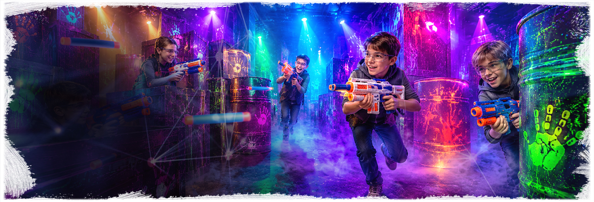
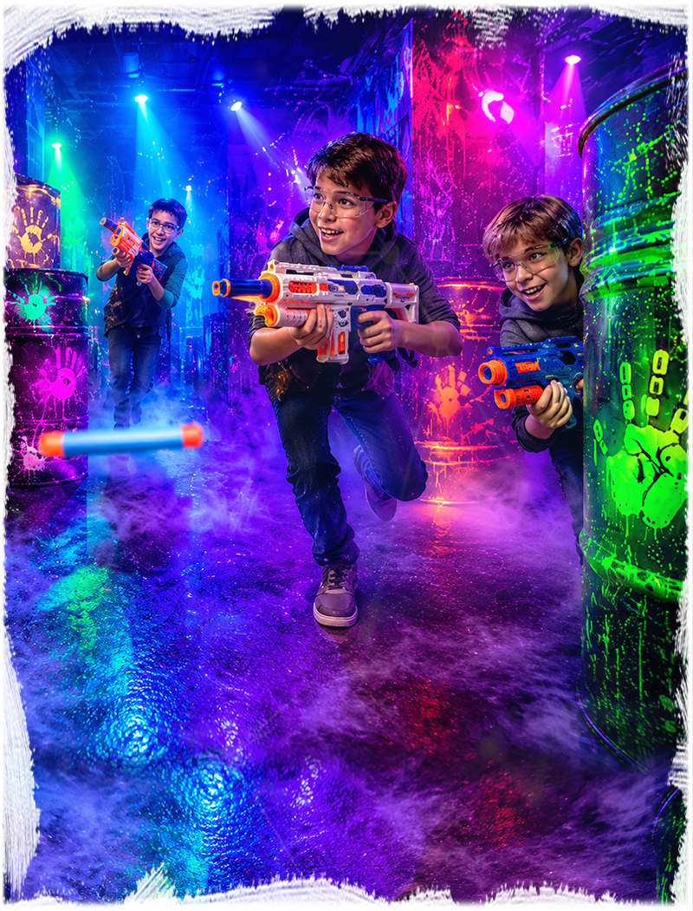
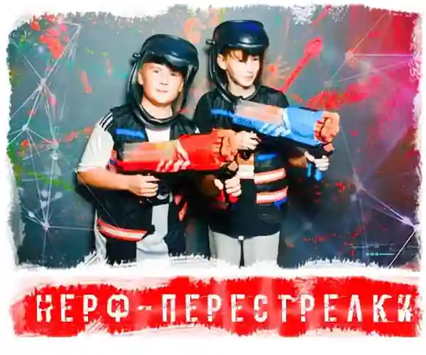
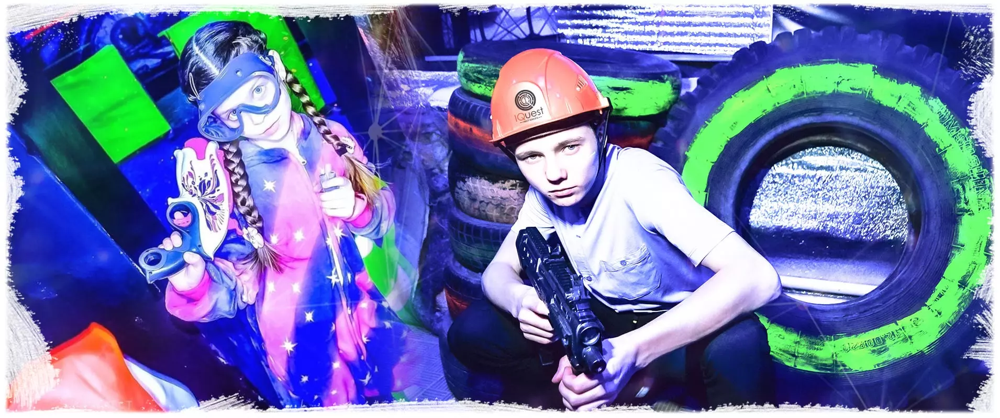

Приезжаете за 5 минутВстречаем гостей и помогаем с организацией.

Иркутск: Юбилейный, 17 и Баррикад, 33
NERF
Активная командная игра с мягкими бластерами, укрытиями и заданиями. Подходит для детей от 7 лет, школьных компаний и динамичного дня рождения. В Иркутске можно выбрать удобную площадку на Юбилейном или Баррикад.
7+4-20 детей1 час игрычайная зонаот 1500 руб./чел.
Что входит в NERF-праздник
NERF - безопасная активная игра с бластерами, где дети делятся на команды, проходят задания, двигаются между укрытиями и играют под контролем ведущего.
Формат хорош для энергичной компании: здесь много движения, понятные правила и нет болезненных попаданий, как в более жестких стрелковых играх.
Игру можно провести как отдельный час активности или совместить с чайной зоной для дня рождения.
Почему удобно для дня рождения
- много движения и командной динамики;
- мягкие бластеры и защитные очки;
- аниматор объясняет правила и следит за темпом;
- подходит мальчикам и девочкам;
- после игры можно добавить чайную зону.
Как пройдет игра
Проходите инструктажОбъясняем правила, безопасность и формат игры.
Играете с ведущимВедущий держит темп и помогает по сценарию.
Чайная зона по желаниюМожно продолжить праздник с тортом и поздравлением.
Запишись на праздник
1. Выберите дату и время, заполните форму
2. Укажите возраст, количество детей и чайную зону
3. Нажмите кнопку забронировать
Цены и условия
Основные условия NERF в Иркутске: цена, возраст, количество детей, длительность, адрес и возможность добавить чайную зону.
От 1500 руб./чел. Итог зависит от даты, количества детей и дополнительных услуг.
Рекомендуемый возраст - 7+. Для младших школьников темп можно сделать спокойнее.
Обычно 4-20 детей. Для большого дня рождения состав лучше согласовать заранее.
Игра длится около 1 часа. После прохождения можно добавить чайную зону.
Иркутск: мк-н Юбилейный, 17; ул. Баррикад, 33.
Можно подготовить торт, поздравление, стол и время для общения после игры.
Аниматор объясняет правила, помогает детям и держит темп праздника.
Можно выбрать только игру или добавить чайную зону и дополнительные активности.
Кому подойдет NERF
Хороший выбор, если вы хотите
- активным детям от 7 лет;
- классу или компании друзей;
- дню рождения без сложного сюжета;
- детям, которым нравится командная игра;
- родителям, которым нужен безопасный динамичный формат.
NERF выбирают, когда детям нужно выплеснуть энергию, но при этом игра остается организованной и понятной. Ведущий помогает соблюдать правила и переключает команды между раундами.
Формат легко встроить в праздник: сначала активная игра, потом торт и поздравление.
Атмосфера праздника
На фото - общий визуальный стиль активной игры, бластеры, укрытия и настроение детского праздника.





Схема проезда
NERF в Иркутске проходит на площадках IQuest: Иркутск: мк-н Юбилейный, 17; ул. Баррикад, 33.
Иркутск
ул. Баррикад, 33
Вторая иркутская площадка IQuest для детского праздника. NERF.
Открыть в Яндекс КартахNERF на день рождения в Иркутске
В Иркутске NERF удобно выбрать для активного дня рождения: доступны площадки IQuest в мк-не Юбилейный и на ул. Баррикад, можно подобрать адрес по свободному времени и размеру компании.
Страница собрана под локальный запрос: здесь указаны адрес, карта, расписание именно для Иркутска, условия для родителей и возможность добавить чайную зону после игры.
При бронировании назовите возраст детей, количество гостей и повод праздника - администратор подскажет свободное время и комфортный тайминг.
Локальная информация
- Иркутск: мк-н Юбилейный, 17.
- Иркутск: ул. Баррикад, 33.
- Возраст: 7+.
- Можно добавить чайную зону после игры.
- Администратор подберет адрес по дате и свободному времени.
NERF или другой праздник
Если выбираете формат дня рождения, сравните возраст, активность, адрес и то, насколько сценарий подходит для праздника.
| Формат | Возраст | Гости | Настроение | Адрес | Для дня рождения |
|---|---|---|---|---|---|
| NERF | 7+ | 4-20 | активная игра | Иркутск | да |
| Лазертаг | 7+ | 4-20 | командная битва | Иркутск | да |
| Прятки | 7+ | 4-30 | игра в темноте | Иркутск | да |
| Космический корабль | 7+ | 4-20 | квест | Иркутск | да |
Что важно родителям
Лучше обсудить заранее
- возраст детей и количество гостей;
- нужна ли чайная зона после игры;
- будет ли торт, свечи и поздравление;
- нужны ли дополнительные активности или ведущий;
- какой город и адрес удобнее для семьи.
Если праздник нужен без спешки, лучше сразу заложить время на игру и чайную зону. Так дети успевают пройти сценарий, поздравить именинника и спокойно пообщаться после приключения.
Для класса или большой компании администратор поможет подобрать формат, чтобы всем хватило места, ролей и внимания ведущего.
Что обычно нравится детям
Дети быстро включаются в игру, потому что правила понятные, а раунды идут в хорошем темпе.
Формат активный, но контролируемый: ведущий объясняет правила и следит за игрой.
После активной части дети спокойно переходят к поздравлению и чайной зоне.
Похожие активные форматы в Иркутске
Активный форматЛазертаг в Иркутске
Командная игра с безопасным лазерным оборудованием.
Игра в темнотеПрятки в темноте в ИркутскеНеобычный формат для компании детей от 7 лет.
Готовый праздникДень рождения под ключ в ИркутскеПрограмма с игрой, чайной зоной и организацией.
Все вариантыДетские квесты в ИркутскеСравните площадки, адреса и форматы IQuest в городе.
NERF в Иркутске: что важно знать перед бронью
В Иркутске NERF подходит для энергичного дня рождения: дети играют с мягкими бластерами, а ведущий держит темп и правила. Доступность адреса зависит от даты и выбранной программы.
Если часть гостей живет в Свердловском районе, а часть ближе к центру, при бронировании можно сразу обсудить Юбилейный, 17 и Баррикад, 33.
Перед звонком удобно подготовить дату, возраст участников, примерное количество гостей и желаемый формат: только игра, игра с чайной зоной или праздник с дополнительными услугами.
Локальная проверка
- в Иркутске сценарий и время нужно сверить с адресом: Юбилейный, 17 или Баррикад, 33;
- Юбилейный - Свердловский район, 1 этаж; Баррикад - Куйбышевский район, 3 этаж, домофон 7;
- карта помогает выбрать район, а вход и место встречи лучше подтвердить перед приездом;
- актуальные отзывы лучше смотреть в карточках 2ГИС и Яндекс Карт;
- расписание в форме бронирования относится к выбранной странице;
- если нужна чайная зона, ее стоит согласовать вместе со временем игры.
Частые вопросы
Где проходит NERF в Иркутске?
Иркутск: мк-н Юбилейный, 17; ул. Баррикад, 33.
С какого возраста можно играть?
Рекомендуемый возраст - 7+.
Сколько детей может участвовать?
Обычно 4-20 детей. Для большой компании лучше заранее согласовать состав.
Можно ли отметить день рождения?
Да, к игре можно добавить чайную зону, торт и поздравление.
Выбрать время: NERF в Иркутске
Позвоните или оставьте бронь на сайте: администратор подскажет свободное время, адрес, формат чайной зоны и программу под возраст детей.
Позвонить 8 (901) 666-888-1